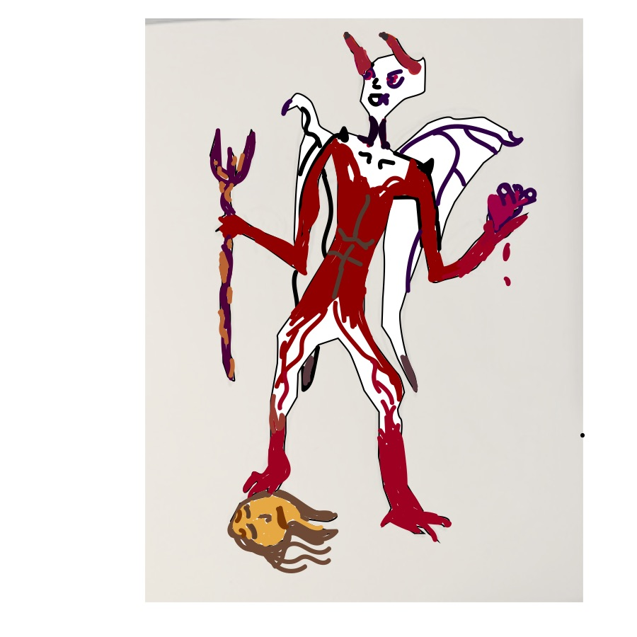

San Jose, California
It had been a decade since Lucifer had defeated the humans with his demon army against his rival Samaria (Mother Nature). The earth has become a wasteland. Demons walk the earth while humans live in the sewers where all hope is lost - well almost all.

Samaria has had a vision of a human girl who has within her the power to bring an end to this darkness. So Samaria sends her most trusted warriors to bring Sapna to her castle where she will help destroy these vile demon creatures. However, most importantly to put an end to Lucifer’s tirrany.
Lucifer hears about this new threat and though he could extinguish the problem himself, he would much rather have someone else do it. So he sends Zill, who is his most trusted demon. Zill is both a male and female demon, but both characteristics are what make this creature so murderous - they can’t make up their mind on things so they resort to killing. They will find Sapna and make sure there is nothing left of her once they are done with her - or at least that is what they think..
On their way to Samaria’s castle, the two most trusted warriors and Sapna encounter a witch, named Margo with a power they did not anticipate. After fighting off demons to protect Sapna, Margo is requested to accompany them on the remainder of their journey. While back at the castle Samaria has had another vision. Through her powers Samaria sends word to her warriors to be on the lookout. The message cannot go unnoticed because this last key could mean hope for mankind.